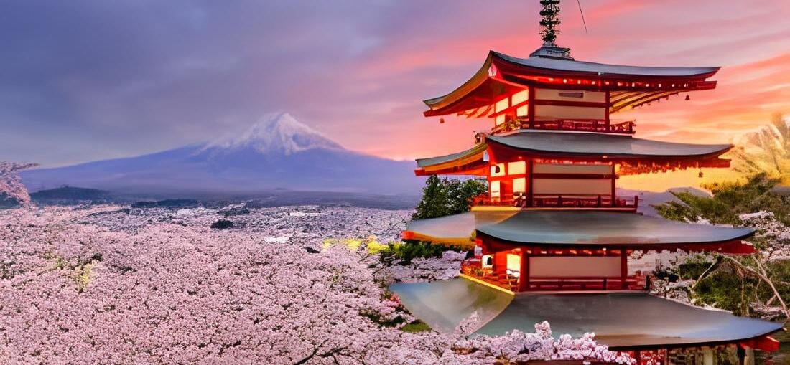
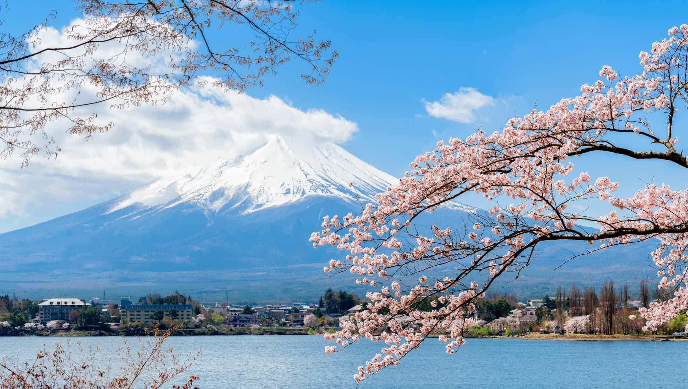
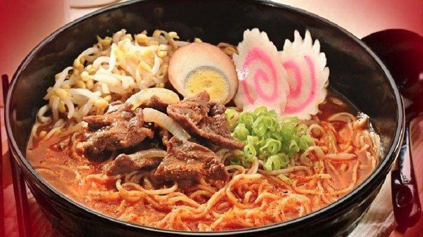

Sejarah Jepang
Jepang adalah salah satu cerita yang kaya dan penuh warna, mencakup ribuan tahun perkembangan budaya, politik, dan teknologi yang unik. Jepang dikenal sebagai negara yang mampu beradaptasi dengan perubahan zaman sambil tetap mempertahankan identitas tradisionalnya.
Perjalanan sejarah Jepang dimulai pada Zaman Jomon (sekitar 14.000 SM – 300 SM), ketika masyarakat pertama kali menetap di pulau-pulau Jepang dan hidup dengan berburu, meramu, serta mulai mengenal kerajinan tembikar. Zaman ini diikuti oleh Zaman Yayoi (300 SM – 300 M), yang memperkenalkan teknik pertanian, pengolahan logam, dan sistem sosial yang lebih kompleks.
Pada awal abad ke-6, pengaruh China dan Korea mulai masuk ke Jepang, membawa ajaran Buddhisme serta sistem penulisan kanji yang kemudian berdampak besar pada budaya dan politik Jepang. Zaman Nara dan Heian (710 – 1185 M) menjadi era di mana budaya kekaisaran Jepang berkembang pesat, dengan seni, sastra, dan arsitektur yang mencerminkan pengaruh Asia Timur.
Namun, Jepang juga melalui periode yang lebih turbulen, seperti pada Zaman Feodal (1185 – 1600 M), ketika para samurai dan shogun mendominasi lanskap politik. Periode Edo (1603 – 1868 M), di bawah kepemimpinan Keshogunan Tokugawa, menjadi masa panjang stabilitas, isolasi dari dunia luar, dan perkembangan budaya yang luar biasa, termasuk seni ukir kayu ukiyo-e dan kabuki.
Ketika Jepang membuka diri kembali kepada dunia pada pertengahan abad ke-19, melalui Restorasi Meiji (1868), negara ini memasuki era modernisasi yang cepat. Restorasi ini menandai perubahan besar dalam struktur politik dan ekonomi Jepang, mengakhiri kekuasaan shogun dan memulai era pemerintahan kekaisaran yang terpusat. Jepang dengan cepat bertransformasi menjadi kekuatan industri dan militer yang signifikan.
Sejarah Jepang terus berlanjut melalui pergolakan Perang Dunia II, di mana kekalahan Jepang pada tahun 1945 membawa perubahan drastis pada tatanan politik dan sosial negara tersebut. Setelah perang, Jepang mengalami kebangkitan ekonomi yang luar biasa dan berkembang menjadi salah satu negara paling maju di dunia.
Eksplorasi Keindahan Alam di Negeri Matahari Terbit
Mengunjungi Jepang satu kali tentu tak akan cukup.
Selalu ada alasan untuk kembali dan menjelajahi negara ini secara lebih mendalam.
Jika sebelumnya aktivitas Anda berpusat di kota-kota besar, kini saatnya bergeser sedikit untuk menikmati
keindahan alam yang tak kalah memukau. Meskipun dikelilingi perairan, Jepang yang berada di atas lempeng vulkanik memiliki banyak gunung, bukit, ngarai, sungai, dan hutan.
Didukung empat musim yang silih berganti, keelokan alam Jepang menawarkan suasana berbeda di setiap musimnya.
Pemandangan Dataran Tinggi yang Menyejukkan Mata
Jika sudah melihat Gunung Fuji dari kejauhan, kini saatnya Anda menjejakkan kaki di gunung tertinggi di Jepang ini. Mendaki gunung menjadi kegiatan favorit sepanjang musim panas untuk menyaksikan matahari terbit yang ikonis.
Anda bisa mencapai puncak melalui satu dari empat trek, dan trek paling terkenal ialah trek Yoshida di sisi Prefektur Yamanashi.
Untuk melihat matahari terbit, naiklah hingga stasiun ke-7 atau 8 satu hari sebelumnya, lalu lanjutkan pendakian hingga mencapai puncak di hari berikutnya.

Jika mendaki Gunung Fuji terasa berat, Anda bisa memilih opsi yang lebih menenangkan: bersantai di Danau Kawaguchi.
Di musim semi, danau ini memperlihatkan suasana romantis berkat perpaduan dari warna merah jambu bunga Sakura dengan latar Gunung Fuji yang syahdu. Jangan lewatkan aktivitas menarik di sekitar Danau Kawaguchi,
seperti memancing, naik perahu mengelilingi danau, bersepeda, hingga berendam di onsen.

Food
Masakan Jepang telah menjadi salah satu yang paling populer dan dihormati di dunia.
Sushi, hidangan tradisional yang dulu hanya dinikmati di Jepang, kini dapat ditemukan di hampir setiap kota besar di seluruh dunia.

Demikian pula, ramen, yang dulu merupakan makanan sederhana berupa mie dalam sup,
kini telah berkembang menjadi pengalaman kuliner mewah, dengan kedai ramen khusus bermunculan di berbagai negara.
Fokus masakan Jepang pada kesegaran, kesederhanaan, dan penyajian juga memengaruhi tren kuliner modern,
dengan istilah seperti “umami” menjadi umum di dunia makanan.
